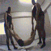
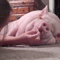

너희들은 너무 설쳤어 콘



여자현배
ㅋㅋㅋ 쿨하네
점보라면
라면 1개만 먹고 버텼는데 어떻게 몸이 저러냐 제발 리얼쉿을 좀 해라
점보도시락이라네요
점보도시락이면 거짓말은 아니네
ㅋㅋㅋㅋㅋㅋㅋㅋ
그럼 국힙은 할게 아무것도 없어
문신 양아치들 크롬하츠 줄줄이 달고 랩하면서도 엄마 미안해 성공해서 호강시켜줄께 존나 하잖아 ㅋㅋ
종류가 라면 하나라고 아 ㅋㅋㅋㅋ
깔려죽으실 ㅋㅋㅋㅋㅋㅋ
점보라면 먹었나벼
배화의술 육탄전차!!
ㅅㅂ 쟤가 국힙을 다먹어서 국힙망했던거네
라면한개(5개들입)
지로라면이랍니다
호감이노 ㅋㅋㅋ
애니메 프로필 사기잖아
ㅋㅋㅋㅋㅋ 개웃기네
이게 힙합이지 ㅋㅋㅋ
한개가 아니라 한박스겠지
ㅋㅋㅋㅋ존나쿨하네 저게 힙합이지
한시간 버티셨나보지
이야 털털하니 전사같네. 호감이다
깔려죽으실 ㅋㅋㅋㅋㅋㅋㅋㅋ 유쾌하네 ㅋㅋㅋㅋㅋ
깔려죽으실 ㅋㅋㅋㅋㅋ
걍 사람좋은사람이였네 ㅋㅋㅋㅋㅋ
귀엽다 ㅋㅋㅋㅋㅋㅋ
대 호 감 ㅋㅋ
삼십개 깔려죽으실 ㅋㅋㅋ
깔려죽으쉴 ㅋㅋㅋㅋㅋㅋㅋ
어케버텼노
그 뭐냐 대형 도시락 라면 그건가
라면 박스 1개도 라면 1개지..
힙합 맞네 ㅋㅋㅋ
ㅋㅋㅋㅋㅋㅋㅋㅋㅋㅋㅋㅋㅋ 아 ㅈㄴ 웃었넼ㅋㅋㅋㅋㅋㅋㅋㅋㅋ
ㅋㅋㅋㅋㅋㅋ 진짜 사람이 호감이네 ㅋㅋㅋㅋㅋㅋ
인스타 쟤 닉 검색했는데 왜 안나오지..?
이게 힙합이지